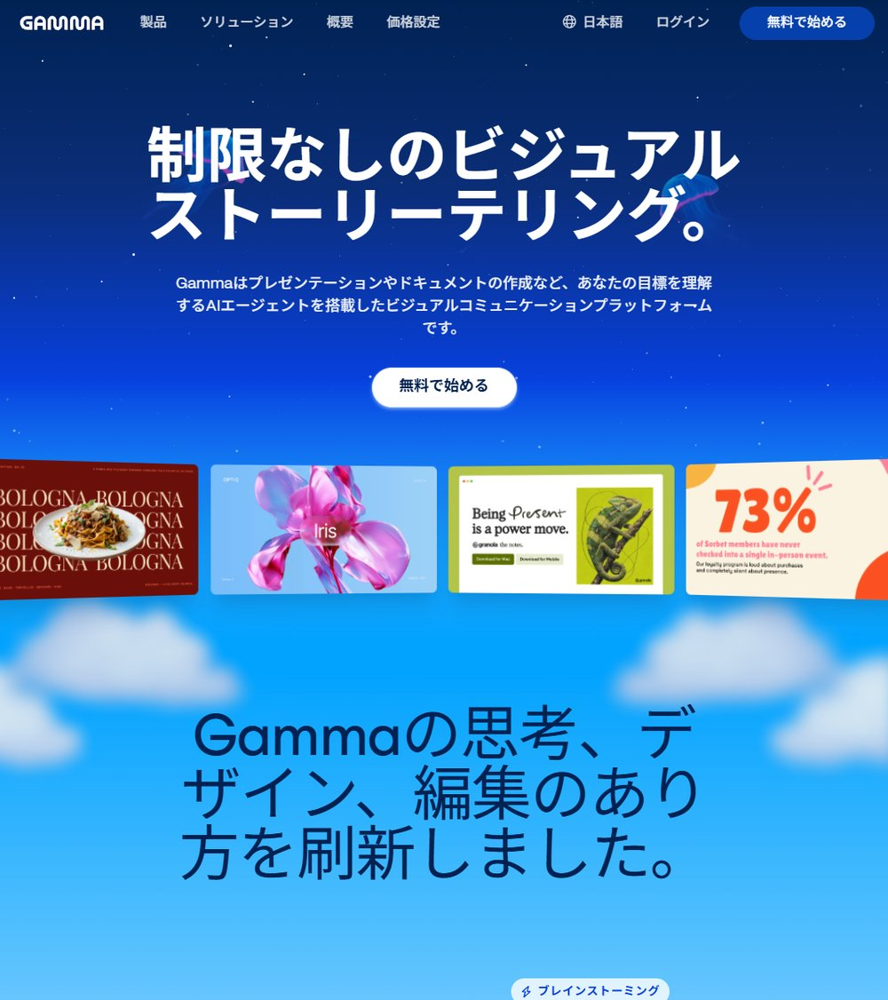

AIプレゼン資料作成ツール比較2026｜MiriCanvas vs Gamma vs ChatGPT

3ツールの違い早見表
| ツール | 強み | 無料枠 | 向いている人 |
|---|---|---|---|
| MiriCanvas | テンプレートの多さ・日本語対応 | 無料プランあり（1GB保存） | まず無料で資料を作りたい人 |
| Gamma | AI生成スライドの完成度 | クレジット制の無料枠 | 構成から一気に作りたい人 |
| ChatGPT | 文章のたたき台作成 | 無料プランあり | 構成案・文案だけ欲しい人 |
MiriCanvasの特徴
80万以上のテンプレートと1,000万以上の素材を公開しており（2026年11月時点の公式表記）、AIプレゼンでテーマを入力するだけでスライド構成を生成できます。AI再デザインやAI画像生成も搭載。まず無料登録で使い切れるか確認するのがおすすめです。MiriCanvasの詳細レビュー →
Gammaの特徴と料金
プレゼンテーションやドキュメントを作成できるビジュアルコミュニケーションプラットフォームです。日本語UIに対応しており、AIエージェントが構成・デザイン・編集を支援します。「制限なしのビジュアルストーリーテリング」を掲げています（公式サイト、2026年11月確認）。
料金は AIクレジット制 が特徴です。公式の料金ページ（2026年11月確認）によると、無料プランはサインアップ時に400クレジットが一度だけ付与され、毎月は replenish されません。各操作が消費するクレジット数はモデルや生成の複雑さによって変動します。
| プラン | 月額の目安 | 月間クレジット | 特徴 |
|---|---|---|---|
| Free | 0円 | 400（初回のみ） | Gammaブランドが入る／約8〜10本のプレゼン |
| Plus | $8〜12（年払いで割安） | 1,000〜1,500 | ブランド除去／カスタムフォント |
| Pro | $25前後 | 4,000 | プレミアムAI／API／アナリティクス |
| Ultra | $100前後 | 20,000 | 最上位モデル／カスタムドメイン100個 |
未使用クレジットは月額量の2倍まで繰り越せます（例：Plusなら3,000まで）。無料プランは「最初の数本を試す」には十分ですが、継続的に使うなら有料プランが必要です。※ 料金は変更される場合があります。最新の値は公式料金ページでご確認ください。
ChatGPTでの資料作成
ChatGPTはスライドそのものを出力するツールではなく、構成案や各スライドの文章を作るためのツールです。AIプレゼン専用ツールと組み合わせて使うのが現実的です。個人向けの現金アフィリエイトプログラムは確認されていないため、紹介による報酬は周辺ツールが対象になります。
無料版でも最新モデルの制限付き利用が可能ですが、画像生成やDeep Researchには回数制限があります。資料作りに使うなら「構成案をChatGPTで作り、MiriCanvasやGammaでスライドに落とし込む」という二段構えが効率的です。ChatGPTの詳細は ChatGPTの料金プラン記事 にまとめています。
選び方の判断軸
- 提出形式を確認：PowerPoint（pptx）が必須なら出力形式を先に確認（MiriCanvas無料版は1日3回まで）
- 作り方で選ぶ：テンプレートで仕上げたい → MiriCanvas／テーマから一気に作る → Gamma
- 無料で試す：MiriCanvasかGammaの無料枠で1資料を最後まで作る
- 回数制限を読む：MiriCanvasのAIプレゼンは月5回、Gammaは400クレジット（初回のみ）
- 自動更新・解約を読む：有料プランは自動更新される場合があります
よくある質問
PowerPointに書き出せますか？
MiriCanvasもGammaもPPTX/PDFへの書き出しに対応しています。ただし無料プランには回数制限があるため、提出が必須の場合は事前に確認してください。
日本語の資料でも使えますか？
どちらも日本語UIに対応しています。MiriCanvasは日本語テンプレートが豊富で、Gammaも日本語入力に対応しています。生成される文章の自然さは用途によるため、無料枠で試してから判断してください。
無料のまま使い続けられますか？
月に1〜2本程度なら無料枠でも使えますが、複数資料を作るなら有料プランが必要になるケースが多いです。まずは1本作り切ってから判断するのが安全です。
まず無料で作り切る
テンプレートの多さで選ぶならMiriCanvas。構成から一気に作るならGamma。まずは無料枠で「最後まで作れるか」を試してください。
※比較は公式情報を確認したうえで記載しています（確認日：2026年11月27日）。